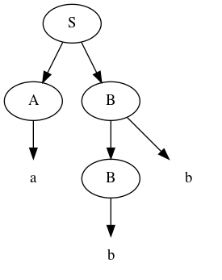
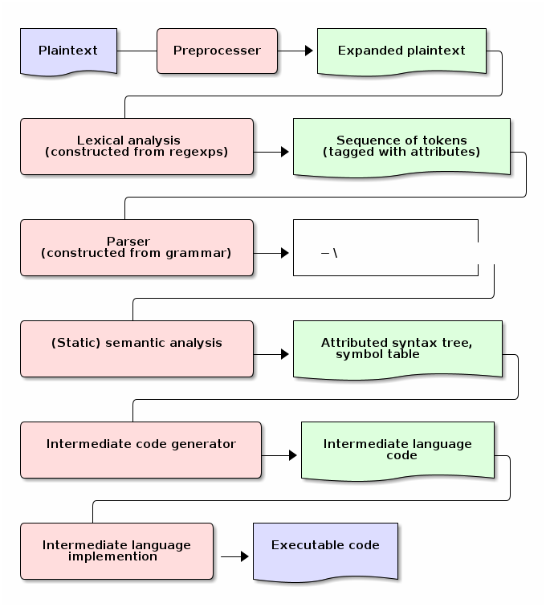
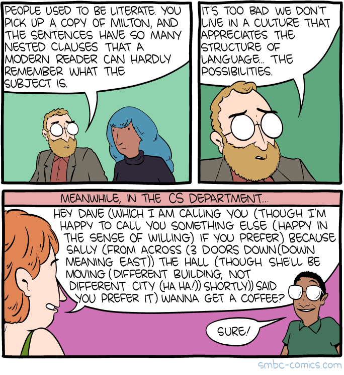

Formal languages
Principles of Programming Languages
1 Preamble
This section introduces the mathematical tools we will use in the discussion of programming languages as a formal language.
Several small formal languages (not full programming languages) are used as examples of the use of these tools.
1.1 Table of contents
- Preamble
- Formal languages
- Describing the syntax of formal languages
- Regular expressions as in formal language theory
- The language for a regular expression
- Additional operators for more expressive regular expressions
- Regular expression examples
- Grammars as in formal language theory
- Notations for grammar productions in formal language theory
- Conventions for grammars
- A simple example grammar
- Exercise – reading grammars
- Grammars generate or recognise strings
- Parse trees
- Example parse tree
- Another example parse tree
- Exercise: creating parse trees
- Backus-Naur form (BNF)
- BNF details
- Aside: ALGOL
- Extended Backus-Naur form (EBNF)
- EBNF details
- Exercise – translating to EBNF
- EBNF's syntactic sugar
- Exercise – a small language C-like language
- Example – EBNF for C++
- Parsing and executable code
- Compilation, interpretation, and hybrid appraoches
- Ambiguity
- Abstract and concrete syntax; setting ambiguity aside
- The semantics of formal languages
1.2 Notable references
- Benjamin Pierce,
“Types and Programming Languages”
- Chapter 3, Untyped Arithmetic Expressions
- Grammars. Alternative syntactic descriptions. Semantics.
- Chapter 5, The Untyped Lambda-Calculus
- Abstract syntax.
- Chapter 3, Untyped Arithmetic Expressions
- Peter Van Roy and Seif Haridi,
“Concepts, Techniques, and Models of Computer Programming”
- Section 2.1, Defining practical programming languages
- Grammars. Alternative semantic approach (the kernel approach.)
- Section 2.1, Defining practical programming languages
- Maribel Fernández,
“Programming Languages and Operational Semantics: A Concise Overview”
- Section 1.3, Components of a Programming Language
- Robert W. Sebesta, “Concepts of Programming Languages” (10th edition)
- Chapter 3, Describing Syntax and Semantics
- Chapter 4, Lexical and Syntax Analysis
1.3 Version history
1.3.1 September 23rd
Notes completed.
1.3.2 September 21st
More complete version posting. Nearly complete up to Ambiguity.
1.3.3 September 16th
More complete version posted. Nearly complete up to Parsing.
After lecture, several typos fixed. First parse tree example also fixed (the nodes were in the wrong order.)
1.3.4 Beginning of course
Very incomplete version of the notes in place.
2 Formal languages
Recall, from formal language theory:
A language over an alphabet (set of symbols) \(Σ\) is a subset of \(Σ^{*}\). The elements of a language are called sentences (or strings or sometimes words).
A formal language is one for which we have a mathematical tool for either
- generating (or deriving) all sentences of the language, or equivalently,
- recognising (or accepting) only sentences of the language.
Examples of such mathematical tools include
- regular expressions,
- automata, and
- grammars.
2.1 The usefulness of formal languages
Formal languages, unlike natural languages, are well-suited for comprehension by computers.
- Machines require unambiguous steps to follow.
- Hence, all programming languages are formal languages.
In particular, in most cases:
- The sets of keywords, names, etc., form several regular languages, and so can be recognised by regular expressions.
- The set of valid (in terms of form) programs forms a context-free language, and so can be recognised by a (context-free) grammar.
2.2 Strings
Recall that given a set \(Σ\), the set of strings over \(Σ\), written \(Σ^{*}\), is the set of all finite sequences of elements of \(Σ\).
In particular, the sequence of length zero we denote by \(ε\). Note that some other sources use \(λ\) for this purpose.
For example, for \(Σ = \{a, b, c\}\),
\(Σ^{*} = \{ε, a, b, c, aa, ab, ac, ba, bb, bc, ca, cb, cc, aaa, …\}\).
Given an element \(e ∈ Σ\), we write
- \(e^{n}\) for the string consisting of \(n\) occurrences of \(e\), and
- \(e^{*}\) for the set \(\{ n ∈ ℕ ∣ e^{n} \}\).
3 Describing the syntax of formal languages
In this section, we will
- briefly review regular expressions and grammars as they are presented in formal language theory, and then
- introduce more practical syntax for each which is used in practice.
In both cases, the additional syntax only adds to the practical expressiveness of the tool.
- It does not change the tool's theoretical expressiveness.
- The same set of languages can be described, but many languages can be described “more easily”.
- We will present brief arguments to this effect by showing how to translate from the new syntax to the restricted syntax.
3.1 Regular expressions as in formal language theory
Given a finite alphabet \(Σ\), the set of regular expressions (over \(Σ\)), denoted \(RE(Σ)\), is given by the following rules.
- \(∅\), \(ε\) and \(a\) (for each \(a ∈ Σ\)) are regular expressions.
- \((α | β)\), \((αβ)\) and \((α^{*})\) are regular expressions
- for any regular expressions α and β.
Respectively, the three operations in (2) are called
- “or”,
- “append”, and
- “star” or “repeat”.
3.2 The language for a regular expression
The language generated/recognised by a regular expression is defined via a (semantic) function \(L : RE(Σ) → Σ^{*}\), defined as follows.
- \(L(∅) = ∅\)
- \(L(ε) = \{ ε \}\)
- \(L(a) = \{ a \}\)
- \(L(α | β) = L(α) ∪ L(β)\)
- \(L(αβ) = \{ uv | u ∈ L(α) ∧ v ∈ L(β) \}\)
- \(L(α^*) = (L(α))^*\)
3.3 Additional operators for more expressive regular expressions
Regular expressions come up frequently in programming, and there is a rich set of extensions to make them easier to construct.
We will not try to extensively list them, but some are listed below, along with their equivalent “basic” form or, where that is infeasible to write, its language.
- \(α^{+} \ \ \ ≈ \ \ \ αα^{*}\)
- \(α? \ \ \ ≈ \ \ \ α | ε\)
- \(\text{.} \ \ \ ≈ \ \ \ a | b | c | …\) where \(Σ = {a, b, c, …}\); i.e., \(L(.) = Σ\)
- \([c_{1}…c_{n}] \ \ \ ≈ \ \ \ c_{1} | … | c_{n}\), where each \(c_{i}\) is a character.
- \([\verb!^!c_{1}…c_{n}]\), where \(L([\verb!^!c_{1}…c_{n}]) = Σ - [c_{1}…c_{n}]\).
- \(α\{m,n\}\), where \(L(α\{m,n\}) = ⋃_{i=m}^{n} L(α)^{i}\)
3.4 Regular expression examples
The set of all non-empty strings over the alphabet can be described by this regular expression.
- Note that if \(Σ\) includes whitespace characters, this regular expression will allow strings made only of whitespace.
.⁺
The set of all non-empty strings which do not include
the letters a, b or c can be described by this regular expression.
[^abc]⁺
The set {na,nana,banana} can be described by
(bana|na)(na)?
3.5 Grammars as in formal language theory
Formally, a context-free grammar is a 4-tuple
\(⟨N, Σ, P, S⟩\)
where
- \(N\) is a finite set of non-terminal symbols (sometimes called variables),
- \(Σ\) is the underlying alphabet, also called the terminals of the grammar,
- \(N\) and \(Σ\) must be distinct,
- \(P\) is a set of productions i.e.,
a binary relation between \(N\) and \((N ∪ Σ)^{*}\),
- In other words, a multi-valued function from nonterminals to strings of non-terminals and terminals,
- \(S\) is a distinguished element of \(N\), called the starting nonterminal.
3.6 Notations for grammar productions in formal language theory
Given
\((A, α) ∈ P\),
we write
\(A ⟶ α\)
and read it as
“\(A\) produces \(α\)” or “\(A\) expands to \(α\)”.
Given a number of productions
\((A, α₁) ∈ P\), \((A, α₂) ∈ P\), …, \((A, αₘ) ∈ P\),
we write
\(A ⟶ α₁ | α₂ | … | αₘ\)
as a shorthand.
3.7 Conventions for grammars
Writing the 4-tuple each time we produce a grammar is tedious.
For this reason, we adopt the following conventions in order to allow us to omit the 4-tuple.
- We write only the list of productions.
- The set \(N\) is taken to be the set of all symbols
appearing to the left of a list of productions.
- Note that this requires each nonterminal have at least one production.
- The set \(Σ\) is usually understood by the context
in which we are defining the grammer.
- For our purposes, it will usually be the set of all ASCII symbols.
- The starting nonterminal \(S\) is understood to be either
- the nonterminal whose name matches that of the grammar we are defining (it may be uncapitalised or abbreviated),
- otherwise, the non-terminal named \(S\), or
- otherwise, the nonterminal to the left of
the first production in the list.
- (We usually attempt to write grammars “top down”.)
3.8 A simple example grammar
A ⟶ aAa | B B ⟶ bBb | C C ⟶ cCc | ε
This produces the language of strings of the form
\(a^{i}b^{j}c^{k}c^{k}b^{j}a^{i}\)
3.9 Exercise – reading grammars
What languages do the following grammars produce?
A ⟶ B | C B ⟶ aaB | ε C ⟶ aaaC | ε
A ⟶ aB | B | ε B ⟶ bC | C C ⟶ cA | A
A ⟶ aA | B B ⟶ bB
What's the tricky part with the last one?
Extra exercise: can you simplify any of them? For instance, by having less non-terminals or less productions? If you believe so, just be careful that your simplification accepts the same string!
3.10 Grammars generate or recognise strings
We have discussed the facts that a grammar can
- generate strings or
- recognise/accept strings.
Then for a grammar \(G\) we might think of functions
- \(generateᴳ : ℕ → Σ^{*}\)
- with the intention that \(generateᴳ(n)\) generates the \(n^{th}\) string in the grammar's language is lexicographic order
- \(recogniseᴳ : Σ^{*} → Bool\)
That is, we have two functions, which output a String or
a Bool respectively.
But there is a useful byproduct which may be obtained during during either process: a parse tree.
3.11 Parse trees
A parse tree's
- nodes (which have children) are labelled by a nonterminal of the grammar,
- leaves (which do not have children) are labelled by a terminal of the grammar, and
- if a node is labelled by a nonterminal
A, the children of that node must correspond to (in order from left to right) the terminals and nonterminals appearing in a production ofA. If a non-terminal would produceε, it is omitted.
3.12 Example parse tree
For example, consider the grammar
S ⟶ AB A ⟶ aA | ε B ⟶ Bb | b
We have the following parse tree for the string aab.
- Note the dashed portions, which show part of how the tree was derived from the grammar, but which will usually be omitted by our rules for parse trees.

3.13 Another example parse tree
Similarly, working with the same grammar,
we have the following parse tree for abb.

3.14 Exercise: creating parse trees
Exercise: provide a parse tree for the string aaa using this grammar.
Is there a valid parse tree for the string bbb?
Exercise: if we add a production A ⟶ a to our example grammar,
can you provide a different parse tree
(or multiple different parse trees) for aaa?
3.15 Backus-Naur form (BNF)
Up until now, we have used the form
N₁ ⟶ P₁ | P₂ | … ⋮
for our production lists.
Commonly in the study of programming languages, an alternative syntax called Backus-Naur form (BNF) is used.
- Named for two members of the ALGOL design committee, who created the first formal definition for a programming language, namely ALGOL.
3.16 BNF details
In Backus-Naur form,
- all nonterminals names are delimited by
angle brackets,
⟨⟩,- (if using ASCII characters,
<>)
- (if using ASCII characters,
- the
⟶is replaced by∷=, - additional whitespace is permitted on the right side
of a production between terminals and nonterminals,
without changing the meaning of the production
- So \(⟨A⟩ ∷= a\ a\ ⟨A⟩\) is treated the same as \(⟨A⟩ ∷= aa⟨A⟩\).
3.17 Aside: ALGOL
ALGOL (for “ALGOrithmic Language”) was a contemporary of Fortran, Lisp, and Cobol.
- Together, those three are the oldest languages
still in (fairly) common use today.
- Granted, not the same versions.
Specifically, there were several iterations of ALGOL, the three major ones being ALGOL 58, ALGOL 60 and ALGOL 68.
ALGOL is not in common use, but it was the most influential on modern programming language syntax, introducing concepts such as the block.
- The “C family” can trace its lineage directly to ALGOL.
3.18 Extended Backus-Naur form (EBNF)
We further extend our grammar notation to include several several additional operators.
- These extensions are part of the extended Backus-Naur form.
- Once again, this is only an extension in the practicality sense.
There is an ISO standard for EBNF. Our syntax and inclusion of features is not chosen to match the standard; it is what is convenient for our use.
3.19 EBNF details
- (Square) brackets,
[], surrounding a string indicate that string may or may not be included in a production.- I.e., they make part of a production optional.
- \(⟨A⟩ ∷= α₁\ [\ α₂\ ]\ α₃\ \ \ \ ≈ \ \ \ ⟨A⟩ ∷= α₁\ α₂\ α₃\ |\ α₁\ α₃\).
- (Curly) braces,
{}, surrounding a string indicate that string may be repeated any number of times, including zero.- \(⟨A⟩ ∷= α₁\ \{\ α₂\ \}\ α₃\ \ \ \ ≈ \ \ \ ⟨A⟩ ∷= α₁\ ⟨A′⟩\ α₃\), \(⟨A′⟩ ∷= α₂\ ⟨A′⟩\ |\ ε\).
- Parentheses,
(), may group parts of a string. - The “alternative” pipe,
|, may be used inside of productions, to indicate alternatives inside a set of brackets, braces or parentheses.- \(⟨A⟩ ∷= α₁\ (α₂\ |\ α₃)\ α₄ \ \ \ ≈ \ \ \ ⟨A⟩ ∷= α₁\ α₂\ α₄\ |\ α₁\ α₃\ α₄\).
- Where necessary, terminals may be single or double quoted,
such as to indicate a whitespace character, pipe or quote.
- \(⟨\text{ebnfprods}⟩ ∷= ⟨\text{string}⟩\ |\ ⟨\text{string}⟩\ ⟨\text{optws}⟩\ “|”\ ⟨\text{optws}⟩\ ⟨\text{ebnfprods}⟩\)
3.20 Exercise – translating to EBNF
Translate this grammar from an earlier exercise to EBNF syntax.
A ⟶ B | C B ⟶ aaB | ε C ⟶ aaaC | ε
Then try to reduce the number of productions in the grammar, while maintaining the language defined.
Can you use only one production when using EBNF?
3.21 EBNF's syntactic sugar
EBNF and our extended regular expressions syntax give us our first example of syntactic sugar; syntax that does not add new features to a language, only more convenient notation.
- As shown above, any grammar using the additional operators
can be translated into one not using them.
- But this likely requires more productions.
- And certainly more characters/space on the page.
Syntactic sugar is a common feature of programming languages.
- Example: (imperative) languages often include various kinds of loops, where only one (or sometimes none!) is truly necessary.
When we discuss programming languages formally, we will usually omit constructs which are syntactic sugar.
- If anything, we may note how to represent them in a “core” language which includes less constructs.
3.22 Exercise – a small language C-like language
Consider the following context-free language.
⟨stmt⟩ ∷= ⟨assign⟩ | ⟨stmt⟩ "; " ⟨stmt⟩
⟨stmt⟩ ∷= "while " ⟨expr⟩ " do " ⟨stmt⟩ | ⟨ws⟩ ⟨stmt⟩ ⟨ws⟩
⟨assign⟩ ∷= ⟨var⟩ ⟨ws⟩ " := " ⟨expr⟩
⟨expr⟩ ∷= ⟨var⟩ | ⟨const⟩ | ⟨expr⟩ ⟨op⟩ ⟨expr⟩ | ⟨ws⟩ ⟨expr⟩ ⟨ws⟩
⟨var⟩ ∷= ('x' | 'y' | 'z') {⟨var⟩}
⟨const⟩ ∷= (1 | 2 | 3 | 4 | 5 | 6 | 7 | 8 | 9 | 0) {⟨const⟩}
⟨op⟩ ∷= '+' | '-' | '*' | '/' | '<' | '>' | '='
⟨ws⟩ ∷= {' '} | {'\n'}
Provide some example programs in this language.
Can you precisely describe the language in English?
3.23 Example – EBNF for C++
A good example of the practicality EBNF for specifying the syntax of languages is this EBNF grammar for C++ (presented in tabular form, rather than lists of productions as we use).
The grammar is much, much larger than anything we will write, but it is still quite concise for describing a real-world programming language.
4 Parsing and executable code
We will briefly summarise the parsing process, beginning with some important terms.
- In this course, we are primarily interested in the beginning of this process, up to the construction of parse trees.
4.1 Atomic syntactic units
We have mentioned that both regular expressions and context-free grammars are used in the description of the syntax of programming languages.
However, our example programming language earlier was described exclusively by a context-free grammar.
- Even the smallest syntactic units of the language,
the atomic syntactic units, have been described by the grammars.
- For instance, we have used the production \(⟨const⟩ ∷= (1 | 2 | 3 | 4 | 5 | 6 | 7 | 8 | 9 | 0) \{⟨const⟩\}\) which describes numerical constants.
This is not done in practice.
4.2 Lexemes and tokens
In practice,
- regular expressions are instead used to describe the
atomic syntactic units of languages.
- For example,
- keywords such as
ifandwhile, constant values such as0or"abc", or names such asheightorsqrt.
- keywords such as
- Lexemes cannot be broken down into meaningful pieces.
- For example,
- Grammars are then used to describe the possible arrangements
of lexemes.
- The terminals of the grammar are then names for sets of lexemes, called tokens, rather than elements of \(Σ\).
- For instance,
- the token
whilefor the set containing only the keywordwhile, - or the token
int_literalfor the set \(\{ 0, 1, -1, 2, … \}\), - or the token
varfor the set of valid variable names.
- the token
4.3 Parsing
Parsing is the process of translating a program from plaintext to executable instructions
whether this is done
- ahead of time (compiling) or
- when the program is to be run (interpreting),
parsing is a necessary step before execution.
- A computer cannot run unparsed higher level language code.
4.4 The zeroth step – preprocessing
Many programming languages support some form of preprocessing directives which are to be carried out before the parsing process properly begins.
- Commonly, “macros”, which often are simply
textual substitutions to be carried out.
- But they can be used for significantly more; in some instances, these directives form a programming language themselves.
4.5 The first step – lexical analysis
After preprocessing, if it is present, comes the the conversion of the plaintext source code into a sequence of tokens.
- This process may be called lexical analysis, lexing or tokenising.
- The program to carry this process out may be called a lexer or tokeniser.
- Lexical analysis discards whitespace, comments, and any other text which is irrelevant to the machine.
4.6 The second step – parsing (syntactic analysis)
After converting from plaintext to a string of tokens, the next step of parsing is to construct the parse tree.
This step is part of the parsing process, but it is also usually called parsing.
- It may also be called syntactic analysis.
More information about the program may be discarded here, as the structure of the tree makes certain text irrelevant (such as parentheses).
4.7 The third step – (static) semantic analysis
Once the parse tree is constructed, rules about the form of programs which cannot be (or cannot easily be) described by a grammar are enforced by (static) semantic analysis.
These rules include type checking and variable scope checking, issues we will discuss later in the course.
This process produces the symbol table, which maps each identifier to its relevant information, such as
- where it is declared in the source and
- its type.
4.8 The fourth step – intermediate code generation
Most high-level languages are not translated directly to machine code; instead, they are translated to some intermediate code, which is closer to machine code than the high-level language.
For instance, languages on the JVM are translated to Java bytecode during compilation/interpretation.
This intermediate code can then be translated into machine code by later steps.
4.9 Visualising the entire parsing process

5 Compilation, interpretation, and hybrid appraoches
We have mentioned above during the discussion of parsing the notions of compilation and interpretation.
Let us define those terms.
5.1 Compilation
A compiler translates the whole program (and any libraries or other code resources needed) ahead of running it.
- High upfront cost (time), for increased efficiency at runtime
- Not portable; machine code is machine dependent.
5.2 Interpreters
An interpreter translates the program as we are running it.
- No upfront cost, but less efficient.
- Portable; can be run on any machine with an interpreter.
- Alleviates some of the programmer's responsibility.
- One user (or group) writes the interpreter once (per machine type); it can be used by any number of users for any number programs.
- Alleviates some of the programmer's responsibility.
- Efficiency is improved by using just-in-time compilation.
- Store the result of interpretation so it can be used again.
- Can achieve better error reporting.
- Relationship between original and translated codes is known at runtime.
- This relationship is discarded when compiling code.
5.3 Hybrid methods
Hybrid methods compile into a special intermediate language, which is then interpreted into machine code when the program is run.
- This intermediate language is usually similar to assembly.
- But targets a virtual machine, not actual hardware!
- Usually called bytecode.
- Greatly offsets efficiency cost of interpretation.
- More portable than compiled code; just need a bytecode interpreter for each target machine.
6 Ambiguity
We have discussed parse trees as a representation of programs used during the parsing process.
Parse trees are extremely helpful because they allow us to discard irrelevant details about program text, and focus on the form of programs.
However, there is one significant problem which can occur: what if a program has multiple parse trees?
It is desirable to have a single parse tree for every program.
- We should not admit two syntactic interpretations for a program!
This can happen quite frequently, and we must discuss methods of eliminating such ambiguity.
6.1 An example of ambiguity
For instance, the string aa has four valid parse trees
under the grammar
⟨A⟩ ∷= a ⟨A⟩ | ⟨A⟩ a | ε
Exercise: find all four valid parse trees for aa with the above
grammar.
6.2 Removing ambiguity
Three tools for removing ambiguity are
- requiring parentheses,
- introducing precedence rules, and
- introducing associativity rules.
The first option takes the least work on the language designer's part.
- But users of a language usually do not appreciate “unnecessary” mandatory parenthesisation.
6.3 Parentheses make structure clear

From the SMBC comic “Language”
6.4 Enforcing precedence with a grammar
To enforce precedence using a grammar:
- Create a hierarchy of non-terminals.
- Higher-precedence operators are produced lower in the hierarchy.
- For instance,
- An additive term can be an addition of multiplicative terms, which is a multiplication of atoms, which in turn are either a constant, variable or a parenthesised term.
- Note that there is recursion in the above, but it's “guarded” with parentheses!
For instance, if we call an additive term simply a ⟨term⟩ and
a multiplicative term a ⟨factor⟩, we might have a grammar
⟨term⟩ ∷= ⟨term⟩ + ⟨term⟩ | ⟨term⟩ - ⟨term⟩ | ⟨factor⟩ ⟨factor⟩ ∷= ⟨factor⟩ * ⟨factor⟩ | ⟨factor⟩ / ⟨factor⟩ | ⟨atom⟩ ⟨atom⟩ ∷= constant | variable | '(' ⟨term⟩ ')'
6.5 Enforcing associativity with a grammar
To enforce associativity using a grammar:
- Left associative operators should be produced by left recursive non-terminals.
- And right associative operators by right recursive non-terminals.
- Operators of the same precedence must associate the same way!
For instance, to iterate on our previous example grammar, we might write
⟨term⟩ ∷= ⟨factor⟩ + ⟨term⟩ | ⟨term⟩ - ⟨factor⟩ | ⟨factor⟩ ⟨factor⟩ ∷= ⟨atom⟩ * ⟨factor⟩ | ⟨factor⟩ / ⟨atom⟩ ⟨atom⟩ ∷= constant | variable | '(' ⟨term⟩ ')'
Then + is right associative, - is left associative,
and similarly * is right associative and / is left associative.
6.6 “Associative” operations
You know that in mathematics, we often avoid parentheses by declaring operations to be left associative or right associative.
- For a left associative operator
⊕,a ⊕ b ⊕ c = (a ⊕ b) ⊕ c.- Examples include subtraction.
- For a right associative operator
⊕,a ⊕ b ⊕ c = a ⊕ (b ⊕ c).- Examples include exponentiation.
- An associative operator is a
⊕for whicha ⊕ b ⊕ c = (a ⊕ b) ⊕ c = a ⊕ (b ⊕ c).
But in computing, some operators behave differently than their mathematical “selves”.
6.7 Addition is not associative… in some cases
Recall that addition is an associative operator.
- So the choice of whether addition in a language associates to the right or to the left may seem arbitrary.
- But numerical types in programming are not necessarily the same as numerical types in math!
- Addition of floating point numbers is not associative.
- Consider a binary representation with two-digit coefficients.
- We will suffix the base with a subscript
bto indicate these are binary numbers. - \(1.0_{b} × 2^{0} + 1.0_{b} × 2^{0} + 1.0_{b} × 2^{2}\) has a different value depending upon parenthesisation.
\((1.0_{b} × 2^{0} + 1.0_{b} × 2^{0}) + 1.0_{b} × 2^{2}\ \ =\ \ 1.0_{b} × 2^{1} + 1.0_{b} × 2^{2}\ \ =\ \ 1.1_{b} × 2^{2}\)
\(1.0_{b} × 2^{0} + (1.0_{b} × 2^{0} + 1.0_{b} × 2^{2})\ \ =\ \ 1.0_{b} × 2^{0} + 1.0_{b} × 2^{2}\ \ =\ \ 1.0_{b} × 2^{2}\)
7 Abstract and concrete syntax; setting ambiguity aside
“Simple”, ambiguous grammars do have a place in describing programming language syntax.
- Such grammars describe the abstract syntax of the language.
- As opposed to concrete syntax.
- Consider programs as trees generated by the grammar
for the abstract syntax of the language.
- There may be ambiguity when translating a plaintext program to a tree.
- But once a tree representation is chosen,
there is no ambiguity!
- It may be that two different trees “flatten” to the same program, but one tree cannot “flatten” to two different programs.
- Such trees more efficiently represent programs.
- The shape of the tree expresses structure.
- Other unnecessary details may be left out.
7.1 Abstract syntax trees are parse trees.
We have already discussed how parse trees are used as an internal representation of programs after parsing.
- We also stated that we discard irrelevant details during
lexical analysis and parsing (syntactic analysis.)
- Such as whitespace, comments, and during parsing, parentheses!
It is common to give two grammars for a language.
- The concrete grammar describes the written form of programs.
- The abstract grammar describes the internal representation of programs.
For this reason, parse trees are also called abstract syntax trees (ASTs.)
7.2 We are interested in abstract syntax
For the remainder of the course, we will focus on abstract syntax.
In particular, in the discussion of the semantics of formal languages, concrete syntactic details are not of interest to us.
8 The semantics of formal languages
The semantics of a language assigns a meaning to each sentence.
- In order to define a semantics, we must
have in mind a semantic domain;
- a domain of meanings into which we map sentences.
- For instance, if we are defining a language
of natural numbers Nat, we will map sentences into the set
ℕ. - Or map elements of a languages of propositions into
𝔹. - We may often provide several different definitions of a particular mapping, to emphasise different details.
8.1 Semantic domains
We may also have several semantic domains for a given language.
- In the case of programming languages,
several domains of meaning have been proposed and used;
the three most well known are
- computing devices, whether a real-world machine or an abstract machine,
- this is known as operational semantics
- (mathematical) functions,
- this is known as denotational semantics
- precondition/postcondition pairs
- this is known as axiomatic semantics
- computing devices, whether a real-world machine or an abstract machine,
8.2 Example – semantics of a language of natural numbers
Consider a language of terms intended to represent natural numbers.
⟨nat⟩ ∷= zero | suc ⟨nat⟩
To assign meaning to these terms, we introduce a mapping from these (concrete) terms to (abstract) numerals.
eval zero = 0 eval (suc n) = (eval n) + 1
The evaluation function in this case is very obvious and trivial, because this language is simply a concrete representation of the semantic domain.
- In comparison, when defining the semantics of programming languages, the language and the semantic domain are not so directly related.
8.3 Example – semantics of propositional logic
As a more complex example, we can map propositional logic terms into the set of booleans.
⟨prop⟩ ∷= tt | ff | ¬ ⟨prop⟩ | ⟨prop⟩ (∧ | ∨ | ⇒ | ⇔) ⟨prop⟩
In order to make the mapping less trivial, let us define it without using boolean combinators; only constants and “if-then-else” statements.
eval tt = true eval ff = false eval (¬ p) = false if eval p true otherwise eval (p ∧ q) = eval q if eval p false otherwise …
Exercise: Complete this evaluation function.
8.4 Example – small-step semantics of propositional logic
The evaluation function defined above can be considered to be a big-step semantics.
- It is a (single-valued) relation between terms and their (final) value.
In contrast, we may define a small-step semantics
- which maps terms to terms which are “one step” simpler.
- Then, once we have reduced to a constant term, that may be mapped to a value (this part is not shown here).
reduce (¬ tt) = ff reduce (¬ ff) = tt reduce (¬ p) = ¬ (reduce p) reduce (tt ∧ q) = reduce q reduce (ff ∧ q) = ff reduce (p ∧ q) = (reduce p) ∧ q …
Exercise: Complete this reduction function.